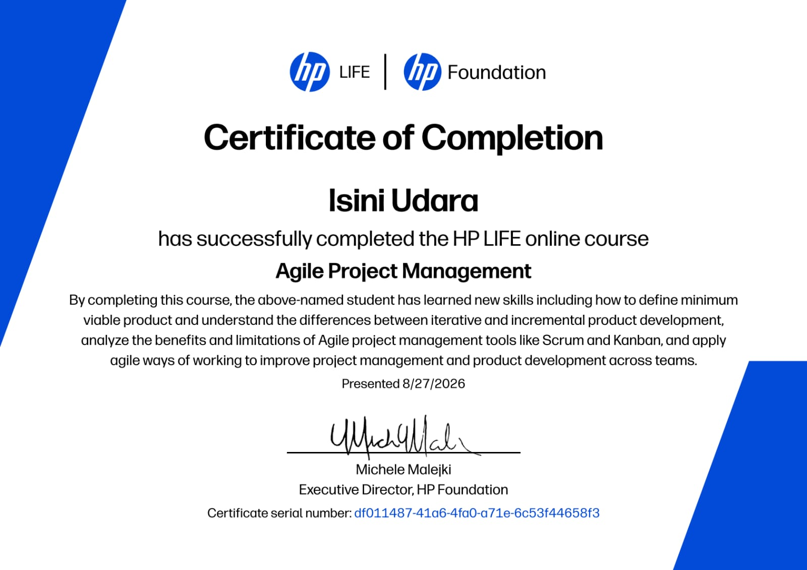
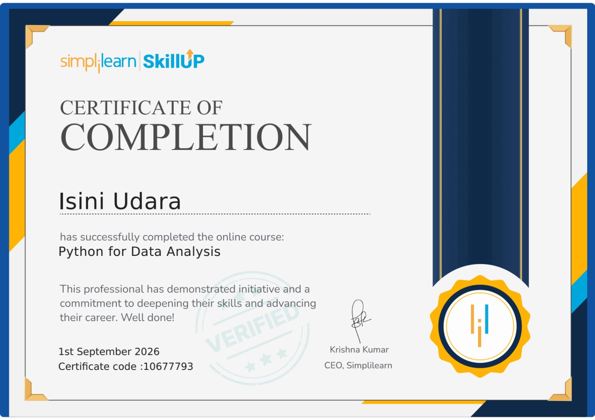
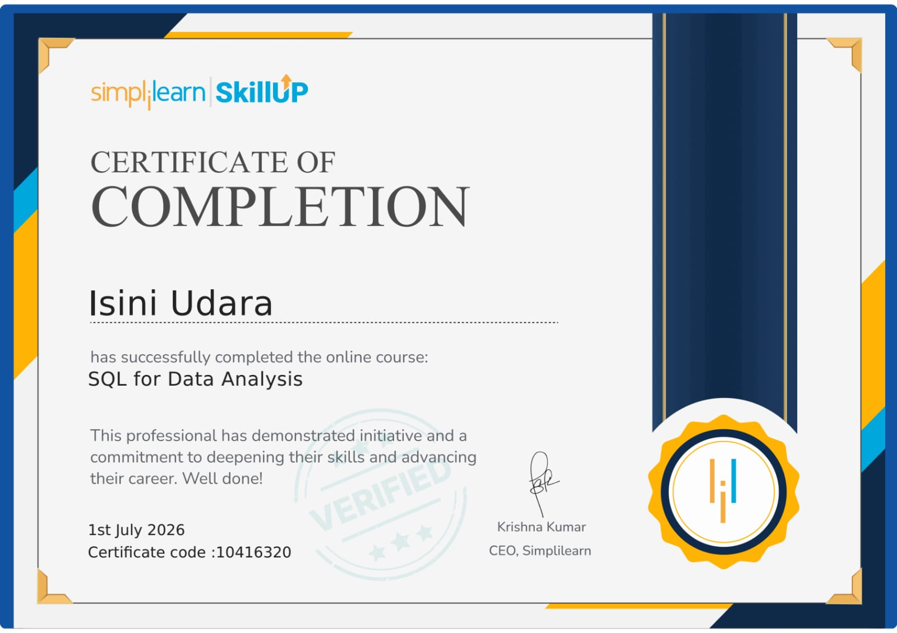
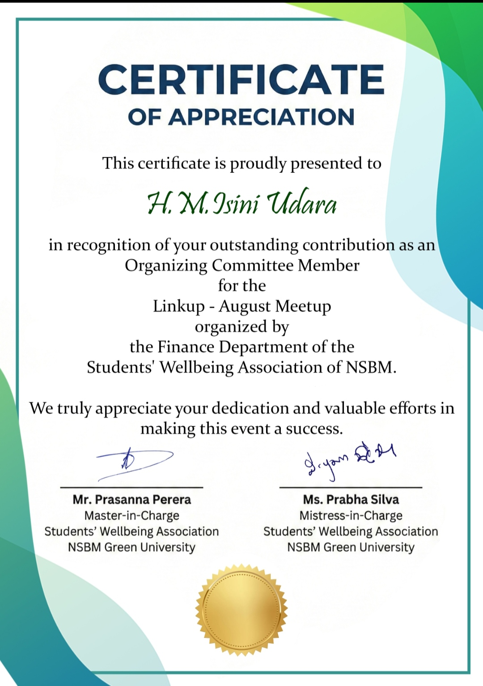
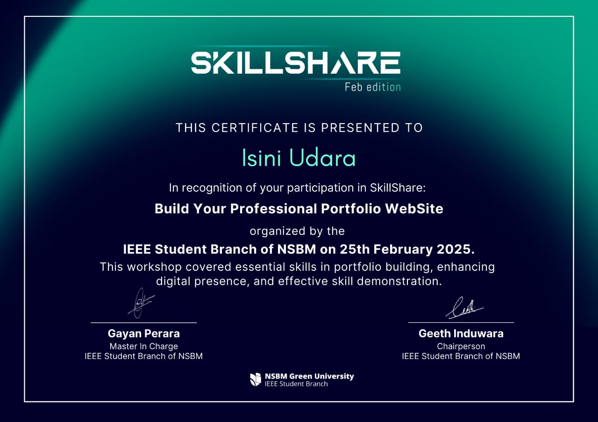

Combining Management Information Systems knowledge with accounting and audit experience. Interested in Business Analysis, ERP & Business Systems and Finance Analytics, using business understanding and technology to improve business processes and support better decisions.
I'm Isini Udara, a Management Information Systems undergraduate at NSBM Green University and a Corporate Level student at CA Sri Lanka. My academic background combines information systems, business and technology with accounting and finance.
My primary career interests are Business Analysis and Business Intelligence. I am interested in understanding business requirements, analysing processes, working with data and developing solutions that support organisational decision-making.
With 1 year and 4 months of audit trainee experience, I have gained practical exposure to bookkeeping, financial statement preparation, payroll processing, bank reconciliations and accounts payable. I am developing my technical capabilities in Power BI, SQL, Excel and Python through coursework and practical projects.
Business Analysis
Requirements analysis, business processes and solution development.
Business Intelligence
Data analysis, reporting, dashboards and business insights.
Finance Analytics & Business Systems
Combining accounting knowledge, financial information and technology.
Project Management
An additional interest in coordinating business and technology initiatives.
Business processes, analysis and finance
Data, programming and information systems
Saylor Academy · BUS250
View CourseAn individual Power BI project exploring Sri Lanka's electricity generation and energy consumption trends from 1965 to 2022. The interactive dashboard presents electricity generation, fossil-fuel usage, renewable energy trends and the overall energy mix.
An individual full-stack learning project designed as an online marketplace connecting designers, customers and companies. The platform explores user management, design submissions, approval workflows and marketplace administration.
A mobile application designed to connect pet owners with veterinary services and simplify pet care management. The system includes veterinary hospital discovery, appointment booking, live queue tracking, pet information management and notifications.
A full-stack task management platform developed as a university team project to support task assignment, tracking and administration. It includes an administrative dashboard, task management features and analytics charts.
A UI/UX design prototype for a blood donation platform focused on improving the experience of blood donors. The concept explores donor information, donation history, confirmation processes and profile management.
A Business Process Management project focused on analysing and improving the library borrowing and book collection experience. The project explores the existing library workflow and a QR-code-based book pickup concept.
A responsive personal portfolio website developed to showcase my academic background, professional interests, technical skills, certifications, project experience and career development.
NSBM Green University
Currently pursuing a degree in Management Information Systems, developing knowledge across information systems, business processes, software development, database management and business intelligence.
CA Sri Lanka
Pursuing the CA Sri Lanka professional qualification at Corporate Level, developing knowledge in accounting, finance, management accounting, auditing and financial reporting.
Yasodara Devi Balika Vidyalaya, Gampaha
Commerce Stream
Kolonnawa Balika Vidyalaya





P.W.F Associate · Gampaha
Assisted in audit procedures for clients
across retail and manufacturing industries.
Supported financial statement preparation,
bookkeeping, payroll processing and bank
reconciliations using QuickBooks.
Handled accounts payable activities,
including invoice verification, payment
processing and preparation of payment vouchers.
Association of Information Systems · NSBM
Selected as an Executive Board Member of the Association of Information Systems for the 2026/27 term. Contributing to planning and organising university events, workshops and student engagement activities.
Sri Lankan Salesforce Ohana · Sri Lanka Dreamin' 2026
Selected as a member of the organising team for Sri Lanka Dreamin' 2026, a Salesforce community conference. Contributing to event preparation and coordination alongside the team.
Students' Wellbeing Association · NSBM
Contributed to organising the LinkUp August Meetup, working with fellow student members on event coordination and organisational activities.
Open to internship opportunities, project collaborations and professional conversations around business analysis, business intelligence, finance and technology.